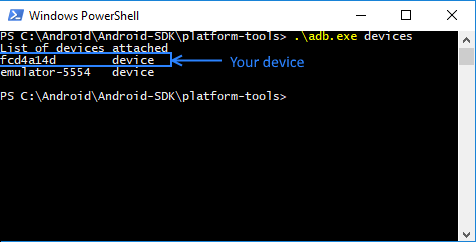
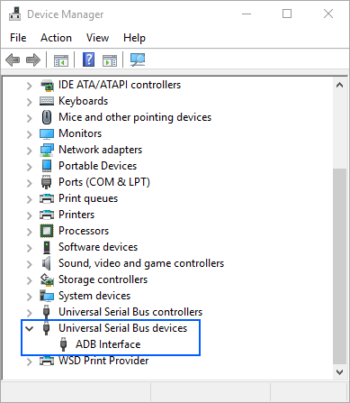
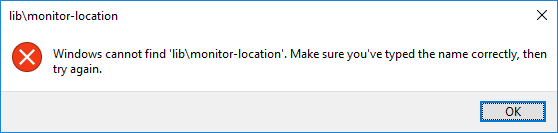

Refer to Android Requirements for version specific information.
Check that you have Enable Logging main object property set to "debug" (i.e. any value but "off")
In order to see what is happening when app is executing in background exists LogCat. The LogCat is an Android application that allows you to debug your apps or find error stack trace in order to see what is happening in the background of your applications. If you are using the Android emulator instead of a device, you can generate some debugging information by executing the following command line:
> android_sdk_path/platforms-tools/adb.exe logcat > some_path_in_your_machine/some_file_name.txt
Example:
> adb.exe logcat > c:\temp\log
Note: check Offline Synchronization Log Level property for offline app debugging
The AVD used by GeneXus is created the first time an application is run (i.e. F5 is pressed). AVD-Manager tool allows changing AVD properties (e.g. change AVD resolution) when the emulator is not launched and even create new ones. In order to launch a non-default emulator, you must run it manually from the avdmanager, and then rerun your application from GeneXus.
As of GeneXus 15, KBN prototyping is not available.
The options are obtained from a JSON file located on the server you’re accessing. The content of this metadata can be verified using a browser. The URL has the following aspect http://<BaseURL>/gxmetadata/<dashboard_name>.menu.json (e.g. http://sdxapps.genexus.com/gcinv10e/gxmetadata/maindashboard.menu.json).
The result should be something as follows:
{
"Dashboard": {
"@Title": "",
"@Background": "",
"@Header": "",
"@Icon": "",
"@Class": "",
"instanceProperties": {
"@IsMain": "True"
},
"Item": [
{
"@Name": "Customer",
"@Description": "",
"@LowCardinality": "False",
"@Image": "",
"@Class": "",
"@Link": "",
"@LinkType": "Page",
"@Data": "15cf49b5-fc38-4899-91b5-395d02d79889-WorkWithDevicesCustomer"
},
....
]
}
Cause: The Android driver is not installed. Even if you may see your device model with the Windows Explorer, you may access your device's files, or the Windows Device Manager is showing your device as Portable Device, it doesn't mean that the android device is recognized. Thus, the build process will not find any Android device connected, and the run process check sequence will start a new emulator, using the default AVD.
Solution: In order to check if the android device is properly recognized by Windows, you should execute the following command line:
> android_sdk_path/platforms-tools>/adb.exe devices

Another way to check that the android device is recognized as a device for Windows is by opening the Device Manager and look for an ADB interface in the Universal Serial Bus controller node.

If you don't have the driver installed, you may look for it at the factory Internet site and get the suitable driver is by installing the software you use to synchronize the device with your computer. The software will install the adequate driver for your device.
Just try pressing F5 again.
When compiles an Android application, GeneXus gives the following output and does not progress:
Command:emulator -avd my_gx_avd_instance
Waiting for device to become ready... (this may take a while)
Also, if I try to run the emulator manually with this command:
> android_sdk_path/tools /emulator -avd my_gx_avd_instance
...I get:
emulator: Error: unknown virtual device name: "my_gx_avd_instance "
emulator: could not find virtual device name: "my_gx_avd_instance "
However, the AVD exists (can be listed using avdmanager list devices command).
Cause: This is due to a known bug in the SDK emulator.exe app that doesn't find the *.avd file.
Solution: Add a System Variable called ANDROID_SDK_HOME that points to the root of where the SDK Manager is storing your AVD (you can find this path at the top of the list of virtual devices in the SDK Manager).
For example:
ANDROID_SDK_HOME = "C:\Windows\system32\config\systemprofile\"
or
ANDROID_SDK_HOME = "C:\User\myuser\"
More info here. Then try again running the emulator.
Output window shows:
Calculating Mobile Targets...
Command:android list avd
Run Developer Menu Failed
Cause: GeneXus doesn't find the avd.exe file.
Solution: Check Android SDK directory property and Android Requirements articles.
When browsing a REST service (e.g. http//localhost/<ApplicationName>/rest/<transactionName>) the following error appears:
Error HTTP 404.0 - Not Found
Cause: The server is running on IIS and URL rewriting is not installed or .svc extension is not properly registered in IIS.
Solution: Refer to How to install URL Rewrite and if it does not work, execute the following command at a command prompt :
> "%WINDIR%\Microsoft.Net\Framework\v3.0\Windows Communication Foundation\ServiceModelReg.exe" -i
When the F5 process takes place, the following message appears:
\Command:adb install -r "G:\<models>\my_kb\my_environment\mobile\Android\my_main\bin\my_main.apk"
pkg: /data/local/tmp/my_main.apk
Failure [INSTALL_PARSE_FAILED_INCONSISTENT_CERTIFICATES]
664 KB/s (443392 bytes in 0.651s)
Android Execution
Failed Run Developer Menu Failed
Cause: The application was marked with a different release key that is already installed on the device.
Solution: Uninstall the application from the emulator and execute F5 again.
When running the application (i.e. from F5) the following message appears:
Command:adb install -r "C:\temp\my_kb\my_environment\mobile\Android\my_main\bin\my_main.apk"
pkg: /data/local/tmp/my_main.apk
Failure [INSTALL_PARSE_FAILED_UNEXPECTED_EXCEPTION]
Android Execution
Failed Run Developer Menu Failed
Cause: This error occurs at the end of the build process when GX is trying to sign the application with SDK 7.
Solution: Please, uninstall this version and install the JDK 6 or JDK 8 instead
When running the application (i.e. from F5) the following message appears:
Command:emulator -avd my_gx_avd_instance
Waiting for device to become ready... (this may take a while)
Command:adb install -r "C:\model\my_kb\my_environment\mobile\Android\my_main\bin\\my_main.apk"
pkg: /data/local/tmp/my_main.apk
Failure [INSTALL_FAILED_INSUFFICIENT_STORAGE]
Android Execution Failed
Run Developer Menu Failed
Cause: The emulator is run anyway but the application has not been deployed, so it could show an error or run the previously deployed application (e.g. Dashboard.apk previous version). Storage full status is shown as follows:
Solution: Remove the default generated AVD by using avdmanager tool. When the application is run again, the AVD will be automatically created.
When running the application the following message appears:
Command:adb install -r "C:\Archivos de programa\ARTech\GeneXus\GeneXusXEv2\Android\GenexusPrototyper.apk"
pkg: /data/local/tmp/GenexusPrototyp
er.apk Success 306 KB/s (0 bytes in 440906.001s)
Command:adb shell am start -n com.artech/.PrototyperActivity -e url http://10.0.2.2:10080/FirstAndroidappRubyEnvironment/ -e name
First Android app Starting: Intent { act=android.intent.action.VIEW dat=Android }
Error: Activity not started, unable to resolve Intent { act=android.intent.action.VIEW dat=Android flg=0x10000000 }
Cause: Your model directory path has spaces that Android-SDK cannot resolve properly.
Solution: Refer to StackOverflow - dex not working with spaces in path on the new android platform tools v8
When running the application the following error appears:
Command:adb install -r "C:\myModel\Data\mobile\Android\App\bin\App.apk"
pkg: /data/local/tmp/App.apk
Failure [INSTALL_FAILED_MISSING_SHARED_LIBRARY]
Command:adb shell am start -n com.artech.mymodel.App/.Main
Starting: Intent { cmp=com.artech.mymodel.App/.Main } Error type 3
Error: Activity class {com.artech.myModel.App/com.artech.myModel.App.Main} does not exist.
Causes:
Solution: Check Android-SDK requirements or repair the AVD by using avdmanager tool (or simply delete it -- It'll be created again the next time the application is run).
When running the application the following error appears:
Command:adb install -r "c:\..WorkWithDevicesCustomer.apk"
pkg: /data/local/tmp/WorkWithDevicesCustomer.apk
Failure [INSTALL_FAILED_DEXOPT]
Causes: the application was previously installed using different Libraries version.
Solution: delete the my_gx_avd_instance emulator using AVD Manager or deleting C:\Users\<my_user>\.android\.avd directory. It will be created next time F5 (run) is executed.
When running the application the following error appears:
No internet connection
Cause: The emulator has no access to the internet (you can check it by openning a website through the device browser). The root cause could be:
Solution: Delete the default generated emulator by using avdmanager tool. It will be created the next time F5 (run) is executed with Internet access by default. Refer to StackOverlof - Android emulator internet access
When compiling the application an error like the following occurs:
[dx] UNEXPECTED TOP-LEVEL EXCEPTION: [dx] com.android.dx.util.DexException: Cannot merge new index 66032 into a non-jumbo instruction! [dx] at com.android.dx.merge.InstructionTransformer.jumboCheck(InstructionTransformer.java:108) [dx] at com.android.dx.merge.InstructionTransformer.access$800(InstructionTransformer.java:25) [dx] at com.android.dx.merge.InstructionTransformer$StringVisitor.visit(InstructionTransformer.java:71) [dx] at com.android.dx.io.CodeReader.callVisit(CodeReader.java:114) [dx] at com.android.dx.io.CodeReader.visitAll(CodeReader.java:89) [dx] at com.android.dx.merge.InstructionTransformer.transform(InstructionTransformer.java:48) [dx] at com.android.dx.merge.DexMerger.transformCode(DexMerger.java:808) [dx] at com.android.dx.merge.DexMerger.transformMethods(DexMerger.java:779) [dx] at com.android.dx.merge.DexMerger.transformClassData(DexMerger..java:751) [dx] at com.android.dx.merge.DexMerger.transformClassDef(DexMerger.java:654) [dx] at com.android.dx.merge.DexMerger.mergeClassDefs(DexMerger.java:526) [dx] at com.android.dx.merge.DexMerger.mergeDexBuffers(DexMerger.java:168) [dx] at com.android.dx.merge.DexMerger.merge(DexMerger.java:186) [dx] at com.android.dx.command.dexer.Main.mergeLibraryDexBuffers(Main.java:300) [dx] at com.android.dx.command.dexer.Main.run(Main.java:232) [dx] at com.android.dx.command.dexer.Main.main(Main.java:174) [dx] at com.android.dx.command.Main.main(Main.java:91)
Cause: There is a setting issue resolved as of GeneXus Tilo Beta 2.
Solution: You have to manually add the line dex.force.jumbo=true to the file <GX>/Android/Templates/default.properties or <GX>/Android/Templates/project.properties, delete <model>\mobile\android\ directory and compile again.
When running the application similar error as follows appears:
error: BUILD FAILED error: C:\Android-SDK\tools\ant\build.xml:542: Unable to resolve project target 'android-23' error: error: Total time: 3 seconds Android Compilation Failed Run MyMain Failed
Cause: You are using a GeneXus upgrade that is tries to use a newest Android-SDK that you have installed.
Solution: You must update your SDK since SDK Platform and Google APIs are required. Learn more.
Cause: This error may appear in runtime if an offline object is called by an online app.
Solution: That scenario is not supported.
When compiling the Android application the following error appears:
AAPT err(Facade for 24252884): libpng error: CgBI: unhandled critical chunk
Cause: There are image extension integrity issues.
Solution: Run the pngcheck tool on different directories res\drawable-<density> of the main object, to verify the integrity of PNG, JNG and MNG files.
When building the application the following error appears:
FAILURE: Build failed with an exception. * What went wrong: Unable to start the daemon process. This problem might be caused by incorrect configuration of the daemon. For example, an unrecognized jvm option is used. Please refer to the user guide chapter on the daemon at [https://docs.gradle.org/2.13/userguide/gradle_daemon.html] Please read the following process output to find out more: ----------------------- Error occurred during initialization of VM Could not reserve enough space for 2097152KB object heap * Try: Run with --stacktrace option to get the stack trace. Run with --info or --debug option to get more log output.
Cause: JDK x64 is not installed or the PC has not memory enough to build the Gradle project (at least 2GB).
Solution: Check the Android Requirements and/or change Android specific properties to assign less memory to Gradle. Alternatively, delete the %USERPROFILE%/.Gradle directory, and Rebuild-All.
When building the application the following error appears:
========== Android Execution started ========== Creating Android Virtual Device 'GeneXus-API24-X86'... Command: android create avd --name GeneXus-API24-X86 --target android-24 --abi google_apis/x86 --skin WXGA720 --device "Nexus 4" --sdcard 200M Launching Android Virtual Device 'GeneXus-API23-X86'... Command: emulator -avd GeneXus-API24-X86 -gpu auto Waiting for device to become ready... (this may take a while) error: Emulator 'GeneXus-API24-X86' was launched, but we timed out waiting for it to respond. Android Execution Failed Run SDLlevoTodo Failed
Cause: There is an ADB process already running on your machine or the AVD is corrupted.
Solution: Check if there exists an adb.exe program executing (use the Task Manager). In such case, kill the process and retry.
If the problem persists, delete the %USERPOFILE%/.Android/avd directory.
When building the application the following error appears:
error: Error creating Android Virtual Device 'GeneXus-API24-X86'. The "android" command is no longer available. For manual SDK and AVD management, please use Android Studio. For command-line tools, use tools\bin\sdkmanager.bat and tools\bin\avdmanager.bat
Cause: As of Android-SDK 25.3.0, Google has changed its command tools and make them non-backward compatible. This requirement was introduced to the Android Generator as of GeneXus 15 Upgrade 5. For that reason, once the developer updates this requirement without backing up previous requirements (set in Android SDK Directory property), it is not possible for previous versions of GeneXus to create a new AVD or run an existing one. In other words, GeneXus Android Generator is trying to use a newer version of the Android-SDK that is non-backward compatible.
Solution: There are two alternatives for avoiding this problem.
When executing monitor.bat tool from Android-SDK for debugging purposes, the following dialog is displayed:

Cause: As of Android-SDK 25.3.0, Google has deprecated the logcat debugging by using the monitor.bat tool.
Solution: Execute the logcat of adb command line tool. Below there is an example of how can execute the command
> adb logcat -v tag GeneXusApplication:* System.out:I *:S
Note: You must ensure that adb tool is reachable from the CMD by adding to the Android-SDK\platform-tools directory to the environment variables or you must be positioned in that directory before executing the command.
This command will filter only those GeneXus applications and System output streams from all the process running on the device.
When running an Android application the AVD (Android Virtual Device) is not recognized and the following message is displayed:
========== Execution started ========== Execution Success Calculating Mobile Targets for SmartDevices (Smart Devices) ========== Android Execution started ========== Creating Android Virtual Device 'GeneXus-API24-X86'... Command: avdmanager create avd --name GeneXus-API24-X86 --package system-images;android-24;google_apis;x86 --abi google_apis/x86 --device "Nexus 4" --sdcard 200M error: Error creating Android Virtual Device 'GeneXus-API24-X86'. Error: Android Virtual Device 'GeneXus-API24-X86' already exists. Use --force if you want to replace it. Android Execution Failed
Cause: As of GeneXus 15 Upgrade 5, due to the Android SDK requirements of Android SDK, Google has made the avdmanager tool non-backward compatible, unrecognizing those AVDs created with previous versions of this tool.
Solution: You must delete the following resources and run (F5) the application again.
This undesired behavior causes the application does not work properly according to my business logic.
Cause: You are running the app on Android 8.0 or higher version and Chronometer control is invisible. This behavior is a known bad practice for Google since Chronometer is a UI widget, no an async task.
Solution: Make the control visible and assign 0dip on its container row height.
Cause: The path to a resource is too long.
Solution: Shorten the path of the KB. ref.: https://stackoverflow.com/questions/33905687/error-file-path-too-long-on-windows-keep-below-240-characters. Depending on your Windows version, you may enable long paths: https://betanews.com/2016/05/29/long-paths-windows-10/
Cause: You may have multiple KBs building and running Android apps on your computer, and one of them has been closed. Gradle daemon is reused, and once it has been killed, other apps cannot be built, producing such error.
Solution: Disable daemon when building your apps. This can be done by setting Gradle Options property by replacing "--daemon" flag with "--no-daemon".
The above message was displayed after 6 minutes trying to run the emulator (by executing emulator -avd my_gx_avd_instance command).
In a second try, I have the following error:
error: Error starting Android Virtual Device 'GeneXus-API16-ARM'.
glMatrixMode:1543 GL err 0x500
Also, if I execute the command manually in the terminal, I have this another error:
PANIC: Missing emulator engine program for 'arm' CPU.
Cause: You may be running GeneXus in a VM (Virtual Machine) or using Parallels in a Mac, but Android emulator cannot start properly due to GPU instability.
Solution: Run the emulator manually by disabling GPU acceleration. This can be done by executing this command:
C:/<android-sdk-path>/emulator > emulator.exe -avd GeneXus-API16-ARM -gpu off
error: A problem occurred configuring project ':SD_HOME'.
error: > Failed to notify project evaluation listener.
error: > Uninitialized object exists on backward branch 142
error: Exception Details:
error: Location:
error: com/android/build/gradle/internal/pipeline/VariantInfoImpl.<init>(Lcom/android/build/gradle/internal/scope/VariantScope;)V @200: goto
error: Reason:
error: Error exists in the bytecode
error: Bytecode:
Cause: Known error, produced in some versions of JDK 1.8.
Solution: Update to the latest version of JDK 1.8 available.
In GeneXus 16 upgrade 5 (or higher), when using a proxy connection, errors are encountered in compilation because the Android generator requires an Internet connection. To avoid such errors the Proxy's properties must be set up within the Gradle option property. To achieve this, the following documents must be checked: Build Environment
========== Android Compilation started ========== Command: gradle :PanelSmartDevices1:assembleDebug --no-daemon --parallel -Dorg.gradle.jvmargs=-Xmx3072m -Dorg.gradle.internal.launcher.welcomeMessageEnabled=false To honour the JVM settings for this build a new JVM will be forked. Please consider using the daemon: https://docs.gradle.org/5.4.1/userguide/gradle_daemon.html. Daemon will be stopped at the end of the build stopping after processing Configuration on demand is an incubating feature. FAILURE: Build failed with an exception. What went wrong: error: A problem occurred configuring root project Android. error: > Could not resolve all artifacts for configuration :classpath. error: > Could not resolve com.android.tools.build:gradle:3.4.1. error: > Could not resolve com.android.tools.build:gradle:3.4.1. error: > Could not get resource https://dl.google.com/dl/android/maven2/com/android/tools/build/gradle/3.4.1/gradle-3.4.1.pom. error: > Could not GET https://dl.google.com/dl/android/maven2/com/android/tools/build/gradle/3.4.1/gradle-3.4.1.pom. error: > dl.google.com error: > Could not resolve com.android.tools.build:gradle:3.4.1. error: > Could not get resource https://jcenter.bintray.com/com/android/tools/build/gradle/3.4.1/gradle-3.4.1.pom. error: > Could not GET https://jcenter.bintray.com/com/android/tools/build/gradle/3.4.1/gradle-3.4.1.pom. error: > jcenter.bintray.com error: > Could not resolve com.google.gms:google-services:4.2.0. error: > Could not resolve com.google.gms:google-services:4.2.0. error: > Could not get resource https://dl.google.com/dl/android/maven2/com/google/gms/google-services/4.2.0/google-services-4.2.0.pom. error: > Could not GET https://dl.google.com/dl/android/maven2/com/google/gms/google-services/4.2.0/google-services-4.2.0.pom. error: > Éste es normalmente un error temporal durante la resolución de nombres de host y significa que el servidor local no recibió una respuesta de un servidor autoritativo (dl.google.com) error: > Could not resolve com.google.gms:google-services:4.2.0. error: > Could not get resource https://jcenter.bintray.com/com/google/gms/google-services/4.2.0/google-services-4.2.0.pom. error: > Could not GET https://jcenter.bintray.com/com/google/gms/google-services/4.2.0/google-services-4.2.0.pom. error: > Éste es normalmente un error temporal durante la resolución de nombres de host y significa que el servidor local no recibió una respuesta de un servidor autoritativo (jcenter.bintray.com) error: Run with --stacktrace option to get the stack trace. Run with --info or --debug option to get more log output. Run with --scan to get full insights. error: Get more help at https://help.gradle.org error: BUILD FAILED in 24s
In this case it is not possible to connect to the URL dl.google.com. Besides configuring the associated proxy parameters in gradle, in some cases will need to download and install certificates, you could execute commands similar to the following:
# Certificate for my company keytool -import -trustcacerts -alias SomeName -file SomeFile.cer -keystore cacerts # Other certificates keytool -import -trustcacerts -alias Bintray -file Bintray.cer -keystore cacerts keytool -import -trustcacerts -alias Gradle -file Gradle.cer -keystore cacerts
| Backlinks | |
| Category:Android platform | Android Requirements |
| Emulation for Android | Execution for Android Using the Device |